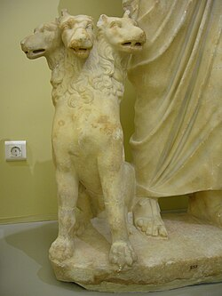
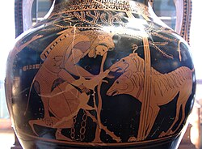

Vol. 1: Mitologia Griega
Cerberus
Cerbero (o Kerberos) es un feroz perro de tres cabezas de la mitología griega, que custodia la entrada al inframundo. Permitía que las almas de los muertos entraran en el Hades pero impedía que entraran los vivos (excepto por algunas excepciones). Cerbero es hijo de Tifón, un gigante, y Equidna, una criatura mitad mujer, mitad serpiente.


Anubis es la contraparte egipcia de Cerbero. Al igual que Cerbero, tenía la cabeza de un perro y protegía el inframundo. El nombre de Cerbero se menciona por primera vez en la Teogonía de Hesíodo (en torno a 700 a.C.)